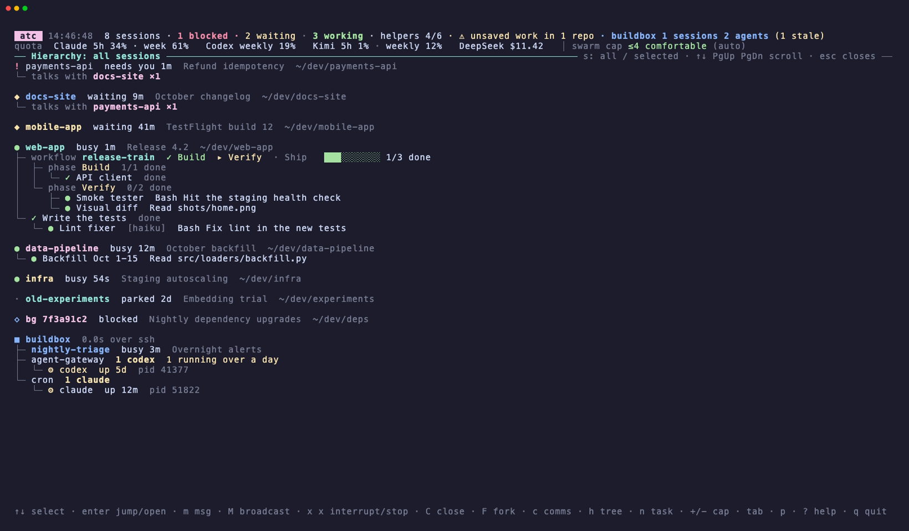
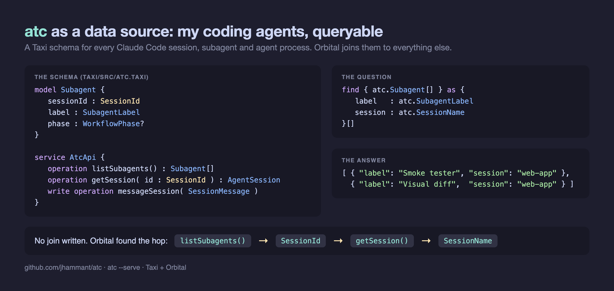

One terminal screen for every Claude Code session, subagent, workflow and agent process on your Mac and your servers. See who's waiting for you and what each swarm is doing, then steer them from the same screen.
# one Python file, no dependencies
git clone https://github.com/jhammant/atc ~/dev/atc
ln -s ~/dev/atc/atc.py ~/.local/bin/atc
atc
Get atc on GitHubHow it works with Orbital
Run a few Claude Code sessions at once, each fanning out subagents and workflows, add a Codex job and an agent on a server, and the picture goes. The first time atc ran on its author's Mac it found:
Demo data. Arrow into a subagent, open it, then the hierarchy and comms views.

| enter | Jump to the session's terminal tab (iTerm2, Terminal, tmux or Herdr). On a subagent or a process, open it. |
| m M | Type a message into a session, or into every session in a project, as if you typed it there. |
| x x | Interrupt a session, or stop a stray agent process, here or on a server. |
| + - | Raise or lower the swarm cap your sessions respect. |
| n | Start a new task and let a router pick where it runs: Claude, Codex, Kimi or a local model. |
atc never types into a session that is sitting on a permission prompt. The prompt's default answer is "Yes", so a message ending in Enter would approve whatever it was asking. It checks the session's state right before typing and skips it.
atc --serve puts your sessions, subagents, agent processes, messages and quota on HTTP, and a
Taxi schema in the repo describes them. Point
Orbital at it and your agents become one more data source it can query, join
and act on.
The schema only says that a subagent carries a SessionId and that a session can be fetched by one.
Ask for every subagent with its session's name and Orbital works out the route itself. Sessions carry their repo
too, so the same trick joins agents to tickets, pull requests or the product a customer uses.
It writes as well as reads: a write operation lets Orbital message a session, behind the same guard as the terminal.
Add the repo to Orbital's workspace.conf; Orbital polls it, so schema changes arrive on their own.
git {
repositories=[
{ name=atc, uri="https://github.com/jhammant/atc.git",
branch=main, path="/taxi" }
]
}

// sessions waiting on a person find { atc.AgentSession[].filter( (atc.SessionState) -> atc.SessionState == "blocked") } // steer one given { message: atc.SessionMessage = { sessionId: "…", text: "status please" } } call atc.AtcApi::messageSession
Reads are open only on your own machine; writes are off unless you start it with
--serve-writes, and then need a token.
Python 3.9 or later, standard library only. macOS or Linux.
git clone https://github.com/jhammant/atc ~/dev/atc ln -s ~/dev/atc/atc.py ~/.local/bin/atc atc # the live view atc --here # only the sessions in this folder: one project's swarm atc --serve # for Orbital and anything else that speaks JSON
It uses quotamax for quota and the swarm cap, a router for new tasks, and Herdr panes when it finds them. All optional. The README has every key, flag and setting.
Read the README on GitHub